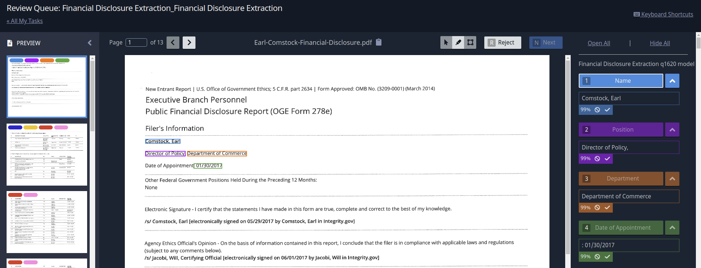
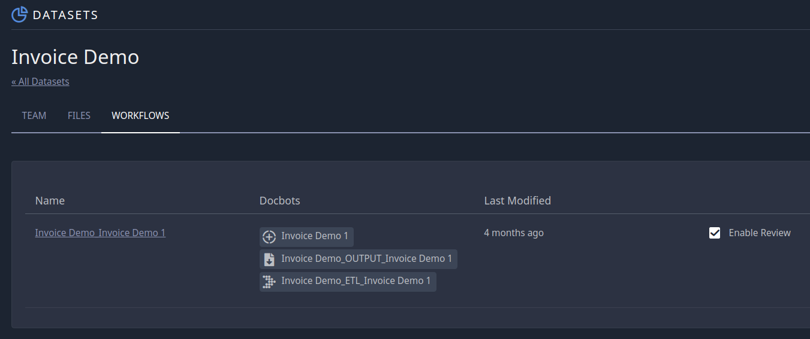

Review¶
Introduction¶
Review provides the option for users to manually approve, fix, or reject model predictions in the app. While the action of reviewing and approving documents must take place in the application, the API is critical in the submission of documents for review and for retrieving the results once they’ve been approved.
Below you can see a sample of what the Review page looks like in the app. The user can reject, edit, or approve the model’s predictions while viewing the source document.
Review via the API¶
Submitting documents to Review requires that you have your workflow ID and have clicked “enable review” for that workflow. You can find “enable review” by clicking on workflows from your dataset (see image below).
The snippet below demonstrates how to send a document to Review:
from indico.queries import WorkflowSubmission
submissions = client.call(
WorkflowSubmission(
files=["./path/to/sample.pdf", "./path/to/sample1.pdf"], workflow_id=52, submission=True
)
)
WorkflowSubmission (when submission=True) will return a list of integers, one for each submission, each a unique identifier for the identically indexed document that you passed to files. The submission ids are persistent, meaning that you can always use that id to check the status and retrieve the prediction results of that submission.
After submitting, the documents are OCR’d (except for image use cases) and passed to the workflow’s models. Once the document has passed through the applicable models, it will be ready for manual review on the Review page in the app.
You can check the status of a submission given its id with the following call:
from indico.queries import GetSubmission
submission = client.call(GetSubmission(731)) # 731 = a submission id
print(submission.status)
print(submission.input_filename)
print(submission.retrieved)
print(submission.result_file) # url for predicions if it's finished processing
The possible statuses of a submission are:
PROCESSING - document/image is passing through the models
PENDING_REVIEW - predictions are made and the document/image is awaiting a human review
PENDING_ADMIN_REVIEW - the initial reviewer rejected the document/image and awaiting admin reivew
PENDING_AUTO_REVIEW - if review and auto review are enabled for a workflow, then submissions will go to this state first, which can be programatically “reviewed” based on custom script before going to PENDING_REVIEW state for a human reviewer.
COMPLETE - the review process is complete and final predictions are ready
FAILED - the document was rejected in admin review
The ‘retrieved’ attribute of the submission object lets you know whether or not the submission result has already been processed (you manage this with the UpdateSubmission call, see below).
After a submission has been processed and is in COMPLETE, PENDING_REVIEW or PENDING_ADMIN_REVIEW status, you are able to retrieve the prediction results (even if it hasn’t been human reviewed).
In addition to checking on specific submissions, you can also retrieve all submissions to a given workflow with ListSubmissions and filter those submissions with the SubmissionFilter.
The call below finds documents that have finished being reviewed, gets the results, and marks the result as having been retrieved:
from indico.queries import GenerateSubmissionResult, ListSubmissions
from indico.filters import SubmissionFilter
# creates a list of Submission objects
submissions = client.call(
ListSubmissions(
workflow_ids=[52],
filters=SubmissionFilter(status="COMPLETE", retrieved=False)
)
)
# Generate the result for the first completed submission
result_url = client.call(SubmissionResult(submissions[0].id, wait=True))
result = client.call(RetrieveStorageObject(result_url.result))
# Finally, mark the submission as retrieved
client.call(UpdateSubmission(submissions[0].id, retrieved=True))
This is what a sample of the “result” object in the snippet above might look like:
# Rejected document
{'submission_id': 155,
'etl_output': 'indico-file:///storage/submission/28/155/155_etl_output.json',
'errors': [],
'results': {
'document': {
'results': {'My Model name': {
'pre_review': [{'start': 0,
'end': 34,
'label': 'Name',
'text': 'John Smith',
'confidence': {
'Name': 0.99,
'Address': 0.0001}}],
'final': [{'start': 0,
'end': 34,
'label': 'Name',
'text': 'James Smith',
'confidence': {
'Name': 0.99,
'Address': 0.0001}}],
}}}},
'review_id': 40,
'reviewer_id': 24,
'review_notes': 'Made one change and approved',
'review_rejected': False,
'admin_review': True}
This example has been approved with a fix by the manual user in the ‘final’ results; notice that the ‘text’ field has changed from ‘John Smith’ to ‘James Smith’. Note that if the document is rejected in Review, “review_rejected” will equal to True and ‘final’ will equal None. A submission result that hasn’t been reviewed will have ‘review_id’ equal to None.